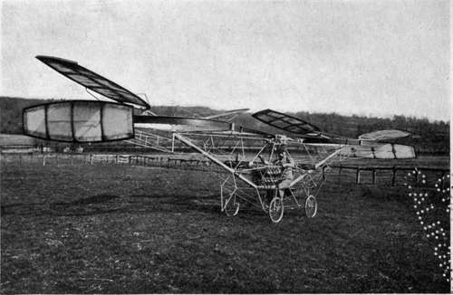

Flying Machine Types. Continued
Description
This section is from the book "The New Art Of Flying", by Waldemar Kaempffert. Also available from Amazon: The New Art of Flying.
Flying Machine Types. Continued
The many-planed flying-machine was probably carried to its extreme by an Englishman, Mr. Horatio Phillips. Between 1881 and 1894 he made a series of experiments which resulted in his building a multiplane, not unlike a Venetian blind in appearance. It consisted primarily of a series of numerous superposed slats, which had extraordinary lifting power. Perhaps the chief objections to such a multiplane are its weight and its height. Consequently it is less stable in the air than biplanes.
Since an aeroplane, whether it be of single-deck or double-deck construction, must be driven at considerable speed to keep it in the air, and must, furthermore, get up a certain preliminary speed before it can fly at all, some inventors have thought of rotating the planes, as if they were huge propellers, instead of driving them along in a straight line. Such screw-propellers, to push a machine from the ground, are mounted on a vertical shaft, the whole constituting a machine which goes by the name " Helicoptèr." A Helicoptèr should theoretically screw its way up into the air. Because no screw-propeller can possibly support a weight in air with anything like the aeroplane's economy of power, the Helicoptèr has never been a practical success. In a Helicoptèr, the screw-propeller must be designed not only for propulsion but for support as well. As far back as 1812 Ponton d'Amécourt and de la Landelle maintained that the heavier-than-air machine would be supported by a screw, — the " sacred screw," to use d'Amécourt's ecstatic Gallic phrase. They found in the Academician Babinet a stout supporter of their view, and he it was who invented the term " hélicoptère." The familiar little screw-fliers which are whirled into the air by hand or by twisted rubber bands seemed to offer experimental evidence enough in support of any Helicoptèr theories. It was recognised, however, that one screw would cause the entire apparatus to rotate. Hence two screws turning in opposite directions were early recommended.
Fig. 5. Roe's triplane in flight. The best engineering opinion is against the triplane because of its large head resistance and consequent low speed.
Photograph by Edwin Levick.
Thus the rotating effect of one screw was counteracted by the other, and the lifting effects of the two were combined.
The most earnest student of the problem of the lifting screw-flier or Helicoptèr has been Colonel Rénard, of the French Army. It was he who first pointed out in 1903 that the ordinary screw would not answer. A Helicoptèr's screw must not only propel, but must also support, for which reason it must be differently constructed from a screw designed for propulsion only. Rénard even went so far as to plan a composite machine, an apparatus which was a Helicoptèr for lifting itself from the ground and an aeroplane in the air. Thus he hoped to overcome the necessity of that preliminary run which aeroplanes must make in order that they may be launched in the air. His machine would theoretically leap straight up from the ground.
The pathway of aeronautic invention is strewn with wrecked Helicoptèrs. Men just as distinguished as Rénard have pinned their faith to the blades of its revolving screws. Among them have been Thomas A. Edison and Emil Berliner. Yet the only perfectly operative screw-flier constructed on the lifting-screw principle is the little toy to which reference has been made. In France, where fashions in aeroplanes are created with the same facility as fashions in clothes, the Helicoptèr still engages the attention of a few enthusiasts, despite the brilliant success of the aeroplane. Cornu is one of these. His machine undoubtedly lifts; but thus far it has not been allowed to display its capabilities in that direction more than two feet from the ground. Bréguet, the inventor of a Helicoptèr aeroplane, is said to have flown in 1908 a distance of sixty-four feet at a height of fifteen feet. He is now building aeroplanes.
Even less encouraging than these experiments with Helicoptèrs, have been the efforts of a few misguided aviators who have sought to build what are known as ornithopters — machines that flap wings like a sparrow. It seems very natural to adopt the flapping-wing principle, because all birds depend upon it to a certain extent. Apart from the myth of Daedalus the earliest recorded proposal of this kind was made in 1500, by Leonardo da Vinci, but he does not seem to have made a practical test. The first actual experiment with flapping wings, according to tradition, seems to have been made by a French tightrope dancer named Allard, in the reign of Louis XIV. Allard attempted a demonstration before the court but failed in his strength, fell, and was seriously hurt. Since that time many aviators in ornithopters have broken their wings and sometimes their bones. The most earnest experimenter was Hargrave, who ultimately gave the world the box-kite, the prototype of the biplane. He built eighteen flapping-wing models between 1883 and 1893. With one of these at least, a flight of three hundred and forty-three feet was made in 1891. It must be said that Hargrave relied on flapping wings solely for propulsion and not for support. His efforts to devise an efficient sustaining surface gave us his box-kite. Only a few French inventors still persist in working on the ornithopter principle. The most persistent of these is Adh. de la Hault. His machine, exhibited at Brussels in 1908, has wings that describe, when in motion, a figure-of-eight curve. His results have been meagre.
Fig. 6. Cornu's Helicoptèr or screw-flyer. In this machine the lifting and propulsive force is obtained entirely by screws.
Photograph by Edwin Levick.
In order to build a flying-machine with flapping wings, so as to imitate birds exactly, a very complicated system of levers, cams, cranks, and links must be employed, all of which usually weigh more than the wings can lift.
Continue to: